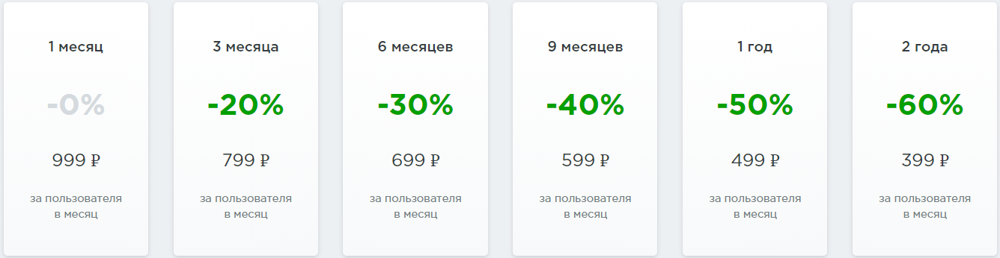

Brizo |
| В Brizo реализована полная синхронизация бизнес-процессов Существут таки возможности, как: 1. Приводить клиентов с сайта (Посетитель только заполнил форму, а менеджер уже видит заявку в воронке продаж) 2. Анализироватьать статистику звонков (Больше чем просто разговоры по телефону — новые сделки прямо в CRM) 3. Объедините чаты с продажами (Разные программы и менеджеры — единая история общения с клиентом) 4. Продавать в социальных сетях (Где пользователи, там и продажи. Вместе с Brizo сделать шаг к клиентам в соцсетях проще) 5. Сделать почту частью CRM (Все каналы связи в одном окне. Всё для комфорта и эффективности) 6. Перезваниваьб по каждой заявке (От пользователя до клиента один клик. В разговоре поможет рекламная аналитика) 7. Прослушивать эти продажи (Удобно звонить клиенту из его карточки. Полезно там же сохранять все разговоры) Далее представлена таблица тарифов: |
|  |